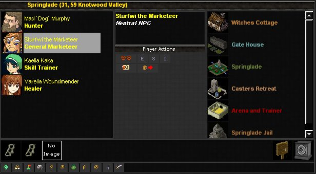

| |||||||||
| |||||||||


| |||||||||
|
The Lands of Myzan is very dynamic and very interactive, pretty much everything in the game can be manipulated or activated in some way or another.
The mouse is the key to the entire game, you can use the mouse to do absolutely everything. That is part of the reason why LoH is so simple, because you dont have to spend minutes typing in commands or entering random digits into boxes to get anything done. The main screen, the one that you may spend most of your time on is shown below.  This screen is shown after you move, and also after doing many different actions in the game, it is the primary screen for interacting with the world, world items, buildings and players/monsters or NPCs. Characters/NPCs and Monsters are shown on the left, Buildings on the right and Items at this location on the bottom. You can interact with all of these simply by clicking on them, alternatively you can also move the mouse over them then select the appropriate action button that will appear in the middle of the screen. | |||||||||
| |||||||||